A crank, a rod and a piston: crank-slider kinematics
A 103-second visual argument about the mechanism inside every piston engine: a crankshaft, a connecting rod and a piston, turned through one full revolution. The dead centers are labelled, the stroke is measured, and the changing mechanical advantage is drawn as a gold gap that shrinks to nothing at the dead centers and is largest near the middle of the stroke. Orbit cameras show the parts that a flat view hides. Built with the JS Shell, with exact kinematics.
1 The idea
Three parts, one plane. A crank of radius r turns about a shaft, so its pin is at (r cos θ, r sin θ). A piston can only slide along a line through the shaft. A rod of fixed length l joins the pin to the piston. Because the rod does not change length, the piston is at x = r cos θ + √(l² − r² sin² θ), and the rod is tilted by φ = asin((r / l) sin θ). Here r = 1.2 and l = 3.6, a rod three times the crank, like many engines.
Dead centers and stroke. At θ = 0 the piston is at x = l + r = 4.8 (top dead center) and at θ = 180° it is at l − r = 2.4 (bottom dead center). The stroke is the difference, 2r = 2.4. At both, the crank and the rod lie along the piston's line.
Not simple back and forth. At a quarter turn x = √(l² − r²) = 3.394, so the piston has gone 4.8 − 3.394 = 1.406 of its 2.4 stroke, 58.6%, more than half. The rod's tilt is why; with an infinitely long rod it would be exactly half.
The mechanical advantage. Torque times angular speed equals push times piston speed, so the torque the crank gets per unit of push is the piston's speed per unit of angular speed, |dx / dθ|. Differentiating gives |dx / dθ| = x tan φ, and that has a picture: extend the rod's line until it crosses the vertical line through the shaft. It crosses at height x tan φ above (or below) the shaft, so the length of the gap from the shaft to that crossing is the mechanical advantage, in the same units as the crank. It is zero when the line runs through the shaft (the dead centers), exactly r at 90° whatever the rod length, and largest, about 1.05 r, near 73°.
| θ | Piston x | Gap / r |
|---|---|---|
| 0° | 4.800 | 0.00 |
| 30° | 4.589 | 0.65 |
| 60° | 4.047 | 1.02 |
| 90° | 3.394 | 1.00 |
| 120° | 2.847 | 0.72 |
| 150° | 2.510 | 0.35 |
| 180° | 2.400 | 0.00 |
The plan for the clock, with the times the voice sets (the cues were timed first, and every beat sits on its cue), in seconds:
| Time | What happens |
|---|---|
| 0.8 – 9 | The frame, then the crank, the rod and the piston, named as the voice says them |
| 9.2 – 19 | The piston's line and the pin's circle appear |
| 19 – 34 | One slow revolution, with the crank angle in the corner |
| 34 – 41 | Top dead center, then bottom dead center, each marked with a ring on the cylinder |
| 41 – 48 | The stroke, bracketed, labelled 2r |
| 48 – 57 | Back to the top, then a quarter turn: the piston is already past the halfway ring |
| 57 – 66 | A full turn while the camera orbits the assembly |
| 66.7 – 76 | A steady push on the piston; the rod's line extends to the shaft; the gold gap is the leverage |
| 76 – 85.5 | To bottom dead center, where the gap is zero, then to the middle of the stroke, where it is largest |
| 85.6 – 100 | The flywheel grows on the shaft and the crank keeps turning; circle, line, rod |
| 100.7 | Cut to the end card |
2 The palette, a room and a floor
The ten materials of the film are made once, here, and every mesh that uses a colour is handed the same one: blue is the crankshaft, steel the piston, rod and flywheel, gold the leverage, coral the dead centers, aqua distances and paths, purple the frame, and the glass of the cylinder is one transparent material. A shared material cannot fade one mesh without fading all of them, so this film reveals things by growing them from a scale of 0.001. The block also fixes the two lengths, K.R and K.L, that everything else is computed from.
// The palette: every material of the film, made once and handed to every mesh that uses it (ten in all, with the room, the floor and the end card).
// blue = the crankshaft, steel = the piston, rod and flywheel, gold = the leverage, coral = the dead centers, aqua = distances and paths, purple = the frame.
const mat = (color, k = 0.4, extra = {}) => new MeshStandardMaterial({ color, emissive: color, emissiveIntensity: k, roughness: 0.5, metalness: 0.1, ...extra });
globalThis.PAL = {
steel: new MeshStandardMaterial({ color: 0xd6dcf5, emissive: 0x9aa6ff, emissiveIntensity: 0.08, roughness: 0.35, metalness: 0.25 }),
blue: mat(0x2f8fff, 0.12),
glass: new MeshStandardMaterial({ color: 0x9ad0ff, roughness: 0.1, metalness: 0, transparent: true, opacity: 0.16, side: THREE.DoubleSide, depthWrite: false }),
aqua: mat(0x14e0c8), coral: mat(0xff4d6a), gold: mat(0xffb703, 0.55), purple: mat(0xa78bfa, 0.45), white: mat(0xffffff, 0.7)
};
// the crank radius and the rod length, in scene units (a rod three times the crank, like many engines); the floor is 2.6 below the shaft
globalThis.K = { R: 1.2, L: 3.6, FLOOR: -2.6, Z: 0.95 };
// a room around the scene and a floor under it, for the shadows to land on
const room = new Mesh(new BoxGeometry(80, 40, 80), new MeshStandardMaterial({ color: 0x2b3680, roughness: 0.95, metalness: 0, side: THREE.BackSide }));
room.name = 'Room';
room.position.set(2, 12, 0);
room.receiveShadow = true;
editor.execute(new AddObjectCommand(editor, room));
const floor = new Mesh(new PlaneGeometry(80, 40), new MeshStandardMaterial({ color: 0x232d70, roughness: 0.9, metalness: 0 }));
floor.name = 'Floor';
floor.rotation.x = -Math.PI / 2;
floor.position.set(2, K.FLOOR, 0);
floor.receiveShadow = true;
editor.execute(new AddObjectCommand(editor, floor));
// one key light up and in front, so every shadow falls on the floor behind the parts; one soft fill
const key = new PointLight(0xfff1dd, 5, 0, 0);
key.name = 'KeyLight';
key.position.set(3, 12, 13);
key.castShadow = true;
key.shadow.mapSize.set(2048, 2048);
key.shadow.bias = -0.0004;
key.shadow.intensity = 0.6;
key.shadow.radius = 4;
key.shadow.camera.near = 0.5;
key.shadow.camera.far = 120;
editor.execute(new AddObjectCommand(editor, key));
editor.execute(new AddObjectCommand(editor, Object.assign(new THREE.HemisphereLight(0xdde6ff, 0x6a78c8, 1.2), { name: 'FillLight' })));
Object.keys(PAL).length // 83 The frame, the rings and the paths
The cylinder lies along +x and the crank turns about the z axis through the origin, so the whole linkage moves in the plane z = 0. Seen from the front, that plane is flat; the point of the orbit cameras is what the front hides. The glass tube is open at both ends so the rod can swing out of it, and there is one bearing pillar, behind the crank, so nothing stands in front of it. The dead-center rings sit where the piston's crown is at each dead center, and the stroke bracket joins them. The pin's circle and the piston's line are drawn slightly in front of the parts (z = 0.95) so they stay visible.
// The frame: a glass cylinder (open at both ends, so the rod can swing out of it), two cradles that hold it and a bearing pillar behind the crank that holds the shaft.
// The cylinder lies along +x, the crank turns about the z axis through the origin, so the whole linkage moves in the plane z = 0 and the camera, looking along -z, sees it flat;
// orbiting shows what the flat view hides: the crank has two webs, the pin sits between them, and everything has a depth.
const frame = new Group();
frame.name = 'frame';
frame.scale.setScalar(0.001);
const tubeGeometry = new CylinderGeometry(0.95, 0.95, 4.6, 48, 1, true);
tubeGeometry.rotateZ(Math.PI / 2); // lie along x
const tube = new Mesh(tubeGeometry, PAL.glass);
tube.name = 'tube';
tube.position.set(3.7, 0, 0); // from x = 1.4 to 6.0
frame.add(tube);
const cradleGeometry = new BoxGeometry(0.4, 1.65, 1.8);
for (const [i, x] of [2.0, 5.6].entries()) {
const c = new Mesh(cradleGeometry, PAL.purple);
c.name = 'cradle' + (i + 1);
c.position.set(x, -0.95 - 0.825, 0);
c.castShadow = c.receiveShadow = true;
frame.add(c);
}
const pillarGeometry = new BoxGeometry(1.0, 2.15, 0.5);
for (const z of [-1.55]) { // one behind the crank, so it never hides it
const p = new Mesh(pillarGeometry, PAL.purple);
p.name = 'pillar';
p.position.set(0, -0.45 - 1.075, z);
p.castShadow = p.receiveShadow = true;
frame.add(p);
}
editor.execute(new AddObjectCommand(editor, frame));
// the dead-center rings (at the piston's crown: 5.6 at the top, 3.2 at the bottom) and the halfway ring (4.4), around the glass
const ringGeometry = new TorusGeometry(1.02, 0.045, 8, 48);
ringGeometry.rotateY(Math.PI / 2); // a ring around the x axis
globalThis.ringAt = (name, x, mat) => {
const g = new Group(); g.name = name; g.position.set(x, 0, 0); g.scale.setScalar(0.001);
const torus = new Mesh(ringGeometry, mat); torus.name = name + '_torus';
g.add(torus);
editor.execute(new AddObjectCommand(editor, g));
};
ringAt('ringTop', 5.6, PAL.coral);
ringAt('ringBottom', 3.2, PAL.coral);
ringAt('ringHalf', 4.4, PAL.aqua);
// the stroke: a bracket under the cylinder from one ring to the other
const bracket = new Group();
bracket.name = 'bracket';
bracket.scale.setScalar(0.001);
bracket.position.set(4.4, -1.4, K.Z);
const barG = new BoxGeometry(2.4, 0.07, 0.07), tickG = new BoxGeometry(0.07, 0.5, 0.07);
const bar = new Mesh(barG, PAL.aqua); bar.name = 'bracketBar';
bracket.add(bar);
for (const [i, dx] of [-1.2, 1.2].entries()) { const t = new Mesh(tickG, PAL.aqua); t.name = 'bracketTick' + (i + 1); t.position.x = dx; bracket.add(t); }
editor.execute(new AddObjectCommand(editor, bracket));
// the two paths of cue 2: the pin's circle (radius = the crank), and the piston's line; both in front of the parts so they stay visible
const circle = new Group();
circle.name = 'pinCircle';
circle.position.set(0, 0, K.Z);
circle.scale.setScalar(0.001);
const circleTorus = new Mesh(new TorusGeometry(K.R, 0.04, 8, 72), PAL.aqua); circleTorus.name = 'pinCircle_torus';
circle.add(circleTorus);
editor.execute(new AddObjectCommand(editor, circle));
const line = new Group();
line.name = 'pathLine';
line.position.set(3.4, 0, K.Z);
line.scale.setScalar(0.001);
const lineBar = new Mesh(new BoxGeometry(6.8, 0.045, 0.045), PAL.aqua); lineBar.name = 'pathLine_bar';
line.add(lineBar);
editor.execute(new AddObjectCommand(editor, line));
// the vertical through the shaft, for the leverage construction (cue 9)
const axis = new Group();
axis.name = 'axis';
axis.position.set(0, 0, K.Z);
axis.scale.setScalar(0.001);
const axisBar = new Mesh(new BoxGeometry(0.04, 4.4, 0.04), PAL.white); axisBar.name = 'axis_bar';
axis.add(axisBar);
editor.execute(new AddObjectCommand(editor, axis));
$S('#frame, #ringTop, #ringBottom, #ringHalf, #bracket, #pinCircle, #pathLine, #axis').nodes.length // 84 The three moving parts
All three are drawn at top dead center. The crank has a shaft along z, two webs (each with a boss for the pin and a counterweight on the far side) and a pin between them: this is the out-of-plane geometry the front view hides. The rod is a shank between a small end and a big end, drawn pointing back along −x from the piston, so rotating the rod's group about the piston pin tilts it the right way. The piston carries the purple arrow for the steady push. The gold parts for the leverage (the stretched line on the rod, the gap and its marker) are built here, hidden, and used in cue 9.
// The three moving parts, each a group, all drawn at the top dead center (crank pin at angle 0, on the +x axis).
// crank: shaft, two webs with a boss for the pin and a counterweight on the far side, the pin between the webs, and (cue 11) a flywheel behind.
// rod: a shank between a small end (on the piston) and a big end (on the crank pin), drawn pointing back along -x from the piston.
// piston: a body with two rings, and (cue 9) the arrow that stands for a steady push.
const add = o => { editor.execute(new AddObjectCommand(editor, o)); return o; };
const cyl = (r, h, axis = 'z') => { const g = new CylinderGeometry(r, r, h, 40); if (axis === 'z') g.rotateX(Math.PI / 2); if (axis === 'x') g.rotateZ(Math.PI / 2); return g; };
// a named mesh at a position that casts and receives shadows
const part = (name, geometry, material, x = 0, y = 0, z = 0) => { const m = new Mesh(geometry, material); m.name = name; m.position.set(x, y, z); m.castShadow = m.receiveShadow = true; return m; };
const crank = new Group();
crank.name = 'crank';
crank.scale.setScalar(0.001);
crank.add(part('crankShaft', cyl(0.35, 4.7), PAL.blue, 0, 0, -0.45)); // the main shaft
const webBar = new BoxGeometry(2.1, 0.8, 0.26), boss = cyl(0.5, 0.26), weight = cyl(0.85, 0.26);
for (const [side, z] of [['Back', -0.62], ['Front', 0.62]]) {
const web = new Group();
web.name = 'crankWeb' + side;
web.position.z = z;
web.add(part('crankWeb' + side + 'Bar', webBar, PAL.blue, 0.15), part('crankWeb' + side + 'Boss', boss, PAL.blue, K.R), part('crankWeb' + side + 'Weight', weight, PAL.blue, -0.8));
crank.add(web);
}
crank.add(part('crankPin', cyl(0.26, 1.5), PAL.blue, K.R)); // the crank pin
const fly = new Group();
fly.name = 'fly';
fly.position.z = -2.6;
fly.scale.setScalar(0.001);
fly.add(part('flyDisc', cyl(1.9, 0.3), PAL.steel), part('flyHub', cyl(0.45, 0.4), PAL.white), part('flyMark', new BoxGeometry(0.5, 0.35, 0.34), PAL.white, 1.65));
crank.add(fly);
add(crank);
const rod = new Group();
rod.name = 'rod';
rod.position.set(K.R + K.L, 0, 0);
rod.scale.setScalar(0.001);
rod.add(part('rodShank', new BoxGeometry(3.0, 0.34, 0.3), PAL.steel, -1.7), part('rodSmallEnd', cyl(0.3, 0.5), PAL.steel), part('rodBigEnd', cyl(0.5, 0.8), PAL.steel, -K.L));
// the rod's line, in gold, drawn in front of everything and stretched to wherever it meets the vertical through the shaft (cue 9)
const ext = new Group();
ext.name = 'ext';
ext.position.z = K.Z + 0.03;
ext.scale.set(0.001, 1, 1);
const extGeometry = new BoxGeometry(1, 0.07, 0.07);
extGeometry.translate(-0.5, 0, 0);
const extLine = new Mesh(extGeometry, PAL.gold); extLine.name = 'extLine';
ext.add(extLine);
rod.add(ext);
add(rod);
const piston = new Group();
piston.name = 'piston';
piston.position.set(K.R + K.L, 0, 0);
piston.scale.setScalar(0.001);
piston.add(part('pistonBody', cyl(0.85, 1.2, 'x'), PAL.steel, 0.2));
for (const [i, x] of [0.6, 0.42].entries()) piston.add(part('pistonRing' + (i + 1), cyl(0.88, 0.07, 'x'), PAL.steel, x));
// the steady push: a purple arrow pointing at the crown (it is built pointing up, then turned to point back along -x), its base 2 units beyond it
const push = new Group();
push.name = 'push';
push.position.set(3.0, 0, 0);
push.rotation.z = Math.PI / 2;
push.scale.setScalar(0.001);
const shaft = new Mesh(new CylinderGeometry(0.09, 0.09, 1.6, 16), PAL.purple);
shaft.name = 'pushShaft';
shaft.position.y = 0.8;
const head = new Mesh(new ConeGeometry(0.22, 0.4, 20), PAL.purple);
head.name = 'pushHead';
head.position.y = 1.8;
push.add(shaft, head);
piston.add(push);
add(piston);
// the leverage, in gold, on the vertical through the shaft: a marker where the rod's line crosses it, and the gap from the shaft to the marker
const gap = new Group();
gap.name = 'gap';
gap.position.set(0, K.R / 2, K.Z + 0.03);
gap.scale.set(1, 0.001, 1);
const gapBar = new Mesh(new BoxGeometry(0.16, 1, 0.16), PAL.gold); gapBar.name = 'gapBar';
gap.add(gapBar);
add(gap);
const imark = new Group();
imark.name = 'imark';
imark.position.set(0, K.R, K.Z + 0.03);
imark.scale.setScalar(0.001);
const imarkSphere = new Mesh(new SphereGeometry(0.2, 20, 14), PAL.gold); imarkSphere.name = 'imarkSphere';
imark.add(imarkSphere);
add(imark);
$S('#crank, #rod, #piston, #fly, #push, #ext, #gap, #imark').nodes.length // 85 The kinematics, written as tracks
The film's motion is not simulated; it is drawn from the formulas. KIN(θ) returns the piston position, the rod tilt, and the gap. spin() turns the crank from one angle to another at a steady speed (one animation, so the crank angle is exact at every moment), and writes the piston and the rod every 10 degrees of the turn, each as a straight line between two samples; a straight line between two samples 10° apart is off by under 0.005. Every animation is queued with its time (ev) and written in time order at the end (flush), so no object's track is ever written out of order.
// The kinematics, and the machinery that writes it into the timeline.
// With the crank at angle t (from the top dead center), the pin is at (R cos t, R sin t), the piston at x = R cos t + sqrt(L^2 - R^2 sin^2 t),
// and the rod is tilted by f = asin(R sin t / L). The rod's line, extended to the vertical through the shaft, meets it at y = x tan f:
// that length is the mechanical advantage (turning torque per unit of push), because torque x angular speed = push x piston speed, and |dx/dt| = |x tan f| angular speed.
const D2R = Math.PI / 180, { R, L } = K;
globalThis.KIN = (deg) => {
const t = deg * D2R, s = R * Math.sin(t) / L, f = Math.asin(s), x = R * Math.cos(t) + Math.sqrt(L * L - R * R * Math.sin(t) ** 2);
return { x, phi: f / D2R, I: x * Math.tan(f), ext: x / Math.cos(f) };
};
// every animation is queued with its time and run in time order at the very end (flush), so no track is ever written out of order
globalThis.EV = [];
globalThis.ev = (t, fn) => EV.push([t, fn, EV.length]);
globalThis.flush = () => { EV.sort((a, b) => a[0] - b[0] || a[2] - b[2]); EV.forEach(([, fn]) => fn()); return EV.length; };
globalThis.grow = (sel, t, to, dur = 500) => ev(t, () => $S(sel).at(t).animate({ to: { scaleX: to, scaleY: to, scaleZ: to } }, dur, to > 0.5 ? 'ease-out' : 'ease-in'));
// a turn of the crank: from time t0 to t1, from angle a0 to a1 (degrees, counter-clockwise seen from the front), at a steady speed.
// The crank is one animation; the piston and the rod are written every 10 degrees (a straight line between two samples is off by under 0.005); `lever` adds the gold parts.
globalThis.THETA = 0;
globalThis.spin = (t0, t1, a1, lever = false) => {
const a0 = THETA, n = Math.max(1, Math.ceil(Math.abs(a1 - a0) / 10)), dt = (t1 - t0) / n;
ev(t0, () => $S('#crank').at(t0).animate({ rotateZ: a1 - a0 }, (t1 - t0) * 1000, 'linear'));
for (let k = 1; k <= n; k++) {
const ts = t0 + (k - 1) * dt, k1 = KIN(a0 + (a1 - a0) * k / n), ms = dt * 1000;
ev(ts, () => {
$S('#piston').at(ts).animate({ to: { positionX: k1.x } }, ms, 'linear');
$S('#rod').at(ts).animate({ to: { positionX: k1.x, rotation: [0, 0, -k1.phi] } }, ms, 'linear');
});
if (lever) ev(ts, () => {
$S('#ext').at(ts).animate({ to: { scaleX: k1.ext } }, ms, 'linear');
$S('#gap').at(ts).animate({ to: { positionY: k1.I / 2, scaleY: Math.max(Math.abs(k1.I), 0.001) } }, ms, 'linear');
$S('#imark').at(ts).animate({ to: { positionY: k1.I } }, ms, 'linear');
});
}
THETA = a1;
return { t0, t1, a0, a1 };
};
// the time at which a turn passes an angle
globalThis.timeAt = (s, deg) => s.t0 + (deg - s.a0) / (s.a1 - s.a0) * (s.t1 - s.t0);
const k0 = KIN(0);
`${k0.x.toFixed(2)} ${KIN(180).x.toFixed(2)} ${KIN(90).x.toFixed(3)} ${KIN(90).I.toFixed(3)}` // 4.80 2.40 3.394 1.2006 The labels
Click the Text stencil (Stencils tab) once, and then paste this. Every label is a copy of that stencil, left-aligned; widths come from the font. Two of them (piston and steady push) are children of the piston and one (rod) a child of the rod, so they travel with their part. The words are shown and cleared in step 9.
// every label is a copy of the one Text stencil, so they share its font; they share a material per colour too, so each label cuts in (and out)
// rather than fading, because a shared material cannot fade one label without fading them all. A label's text begins at its own origin, left-aligned:
// widths come from the font (units of the font size, at scale 1), so a label is centred by subtracting half its width.
// Two labels are children of a moving part, so they travel with it.
const tpl = $S('#Text').nodes[0];
let first = true;
globalThis.label = (name, material, x, y, z, scale, parent) => {
const m = first ? tpl : new Mesh(tpl.geometry.clone(), material);
m.name = name;
m.material = material;
m.scale.setScalar(scale);
m.position.set(x, y, z);
m.userData.textShadow = true;
m.castShadow = false;
if (parent) parent.add(m); else if (!first) editor.execute(new AddObjectCommand(editor, m));
first = false;
ev(0, () => $S('#' + name).at(0).change(''));
return m;
};
// show a label's text at one time and clear it at another
globalThis.say = (name, text, from, to) => {
ev(from, () => $S('#' + name).at(from).change(text));
if (to !== undefined) ev(to, () => $S('#' + name).at(to).change(''));
};
const W = PAL.white, G = PAL.gold, C = PAL.coral, A = PAL.aqua, Z = 1.1;
label('ang', W, -2.7, 2.3, Z, 0.42); // the crank angle, in the corner
label('lev', G, -2.7, 1.85, Z, 0.42); // the leverage, under it
label('lbCrank', W, -1.5, 1.45, Z, 0.42); // cue 1: the three parts
label('lbPiston', W, -0.85, 1.3, Z, 0.42, $S('#piston').nodes[0]);
label('lbRod', W, -2.6, 0.32, Z, 0.42, $S('#rod').nodes[0]);
label('lbPush', W, -0.85, 1.3, Z, 0.42, $S('#piston').nodes[0]); // cue 9: over the piston, where its name was
label('tdc', C, 3.2, 1.25, Z, 0.38); // cue 5: the dead centers, over and under their rings
label('bdc', C, 1.2, -1.7, Z, 0.38);
label('stk', A, 2.35, -2.1, Z, 0.42); // cue 6: the stroke, under its bracket
label('half', A, 3.4, 1.25, Z, 0.38); // cue 7: halfway
label('circ', A, -3.5, -0.1, Z, 0.42); // cue 12
label('lblLine', A, 6.3, 0.2, Z, 0.42);
$S('#ang, #lev, #lbCrank, #lbPiston, #lbRod, #lbPush, #tdc, #bdc, #stk, #half, #circ, #lblLine').nodes.length // 127 The end card
Click the Call card stencil, then paste. It is hung on the far wall, facing the last camera.
// the end card: the Call card stencil, landscape, hung on the far wall and facing the end camera
const card = $S('#callcard').nodes[0];
card.userData.width = 3.2;
card.userData.height = 1.8;
card.geometry = new PlaneGeometry(3.2, 1.8);
$S('#callcard').moveTo(36, 1, 0).scaleTo(8);
card.rotation.set(0, -Math.PI / 2, 0);
card.material.opacity = 0;8 Five cameras
A gentle drift in front for the parts and the first turns; an orbit that swings from the front to the side while the crank turns once (the 3D advantage: you see the two webs, the pin between them, and the rod stay in one plane); a closer camera for the leverage; a wider one for the flywheel; and the end card. The block ends by putting the cuts in order.
// five cameras: a gentle drift in front for the parts and the first turns, an orbit round the assembly, a closer one for the leverage,
// a wider one for the flywheel and the summary, and the end card
function addCamera(name, fov) {
const cam = new THREE.PerspectiveCamera(fov, 16 / 9, 0.1, 400);
cam.name = name;
editor.execute(new AddObjectCommand(editor, cam));
return cam;
}
// a move around a centre: azimuth in degrees (0 = straight in front, looking along -z), a radius and a height, one key every `step` seconds
globalThis.orbit = (cam, t0, t1, az0, az1, radius, y0, y1, aim, step, center) => {
const n = Math.max(1, Math.round((t1 - t0) / step));
const keys = [];
for (let i = 0; i <= n; i++) {
const u = i / n, az = THREE.MathUtils.degToRad(az0 + (az1 - az0) * u);
keys.push({ t: t0 + (t1 - t0) * u, pos: [center[0] + radius * Math.sin(az), y0 + (y1 - y0) * u, center[2] + radius * Math.cos(az)], lookAt: aim });
}
$S('#' + cam.name).setKeys(keys, { smooth: true });
cam.position.set(...keys[0].pos); // where the camera waits before its move starts
cam.lookAt(...aim);
};
const camMain = addCamera('camMain', 40), camOrbit = addCamera('camOrbit', 40), camLever = addCamera('camLever', 40), camFly = addCamera('camFly', 40), end = addCamera('camCard', 50);
orbit(camMain, 0.001, 57.0, -5, 5, 9.5, 0.5, 1.0, [2.2, 0.1, 0], 8, [2.2, 0, 0]);
orbit(camOrbit, 56.9, 66.6, -15, 70, 10, 1.0, 3.5, [2.2, -0.2, 0], 3, [2.2, 0, 0]);
orbit(camLever, 66.5, 85.5, -3, 3, 10.3, 0.4, 0.4, [1.9, 0.1, 0], 6, [1.9, 0, 0]);
orbit(camFly, 85.45, 100.8, 28, 10, 11.5, 2.2, 1.5, [1.6, 0, -0.3], 5, [1.6, 0, 0]);
end.position.set(21, 1, 0); // faces the end card, which hangs on the far wall
end.lookAt(36, 1, 0);
const cams = Object.fromEntries(['camMain', 'camOrbit', 'camLever', 'camFly', 'camCard'].map(n => [n, $S('#' + n).nodes[0]]));
const cuts = [[0, 'camMain'], [56.9, 'camOrbit'], [66.5, 'camLever'], [85.45, 'camFly'], [100.65, 'camCard']];
editor.scene.userData.renderShots = cuts.map(([at, name], i) => ({
id: 'shot-' + name, at, camera: cams[name].uuid, transition: i === 0 ? 'cut' : 'fade', transitionDur: 0.6
}));
editor.work.touch();
editor.scene.userData.renderShots.length // 59 The film
Every beat in one place, on the voice's cues. The crank angle and the leverage are written in the corner every 30°. In cue 9 the rod's gold line stretches from the piston to the vertical through the shaft, the marker appears where it crosses, and the gap grows from the shaft to the marker. From cue 10 on, spin(..., true) keeps all three gold parts exact while the crank turns.
// the film: when each part appears, when the crank turns, and what is written on the screen, all on the voice's cues
const S = [0.8, 9.225, 18.975, 24.85, 34.425, 41.175, 48.25, 56.925, 66.725, 76.075, 85.6, 92.5, 100.725];
// the angle readout, and (when `lever` is on) the leverage readout, change at every 30 degrees of a turn
const readout = (s, lever) => {
for (let a = Math.ceil((s.a0 + 1e-6) / 30) * 30; a <= s.a1 + 1e-6; a += 30) {
const t = timeAt(s, a);
say('ang', 'crank ' + (a % 360) + '°', t);
if (lever) say('lev', 'leverage ' + (Math.abs(KIN(a).I) / K.R).toFixed(2) + ' r', t);
}
};
// cue 1: the frame, then the three parts, then their names as the voice says them
grow('#frame', 1.0, 1, 800);
grow('#crank', 1.8, 1, 700);
grow('#rod', 2.6, 1, 700);
grow('#piston', 3.4, 1, 700);
say('lbPiston', 'piston', 6.1, 18.8);
say('lbRod', 'rod', 6.9, 18.8);
say('lbCrank', 'crankshaft', 8.4, 18.8);
// cue 2: the piston's line, the pin's circle
grow('#pathLine', 10.9, 1, 700);
grow('#pinCircle', 14.0, 1, 700);
// cues 3 and 4: one full turn, slowly
say('ang', 'crank 0°', 19.0);
readout(spin(19.3, 33.7, 360));
// cue 5: the dead centers
grow('#ringTop', 36.9, 1, 500);
say('tdc', 'top dead center', 36.9, 41.2);
readout(spin(38.0, 40.4, 540));
grow('#ringBottom', 39.9, 1, 500);
say('bdc', 'bottom dead center', 39.9, 41.2);
// cue 6: the stroke
grow('#bracket', 41.7, 1, 600);
say('stk', 'stroke 2r', 44.2, 48.1);
grow('#bracket', 48.1, 0.001, 400);
// cue 7: more than half in the first quarter turn
readout(spin(48.5, 52.0, 720));
grow('#ringHalf', 52.6, 1, 500);
readout(spin(52.4, 54.8, 810));
say('half', 'halfway', 54.9, 56.9);
grow('#ringHalf', 56.9, 0.001, 400);
// cue 8: a full turn while the camera orbits (no readout, which would turn edge-on)
say('ang', '', 56.9);
spin(57.2, 66.2, 1170);
// cue 9: a steady push, then the rod's line, then the gap
say('ang', 'crank 90°', 66.8);
grow('#push', 67.1, 1, 600);
say('lbPush', 'steady push', 67.6);
grow('#axis', 69.8, 1, 500);
ev(70.2, () => $S('#ext').at(70.2).animate({ to: { scaleX: KIN(90).ext } }, 1200, 'ease-out'));
grow('#imark', 71.5, 1, 400);
ev(72.4, () => $S('#gap').at(72.4).animate({ to: { positionY: KIN(90).I / 2, scaleY: KIN(90).I } }, 600, 'ease-out'));
say('lev', 'leverage 1.00 r', 73.0);
// cue 10: to the bottom dead center and the leverage goes to zero; then on to the middle of the stroke
readout(spin(76.4, 79.2, 1260, true), true);
readout(spin(81.4, 84.6, 1350, true), true);
// cue 11: the push goes, the flywheel comes, the crank keeps turning
grow('#push', 85.5, 0.001, 400);
say('lbPush', '', 85.5);
grow('#fly', 86.0, 1, 900);
readout(spin(85.9, 100.4, 1785, true), true);
// cue 12: the three ideas of the summary
say('circ', 'circle', 93.9, 100.6);
say('lblLine', 'line', 95.0, 100.6);
say('lbRod', 'rod', 96.3, 100.6);
// the end card
ev(100.8, () => $S('#callcard').at(100.8).fadeIn(2.0));
EV.length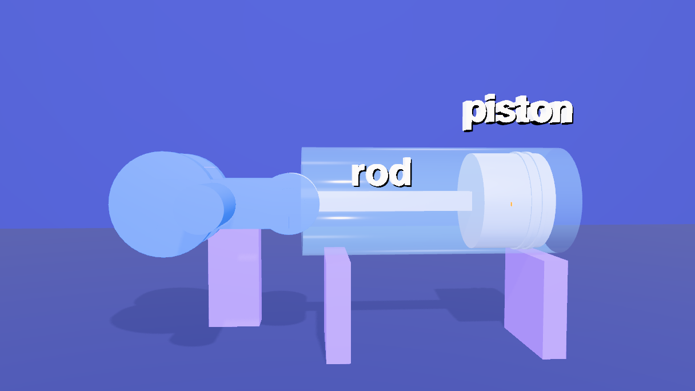
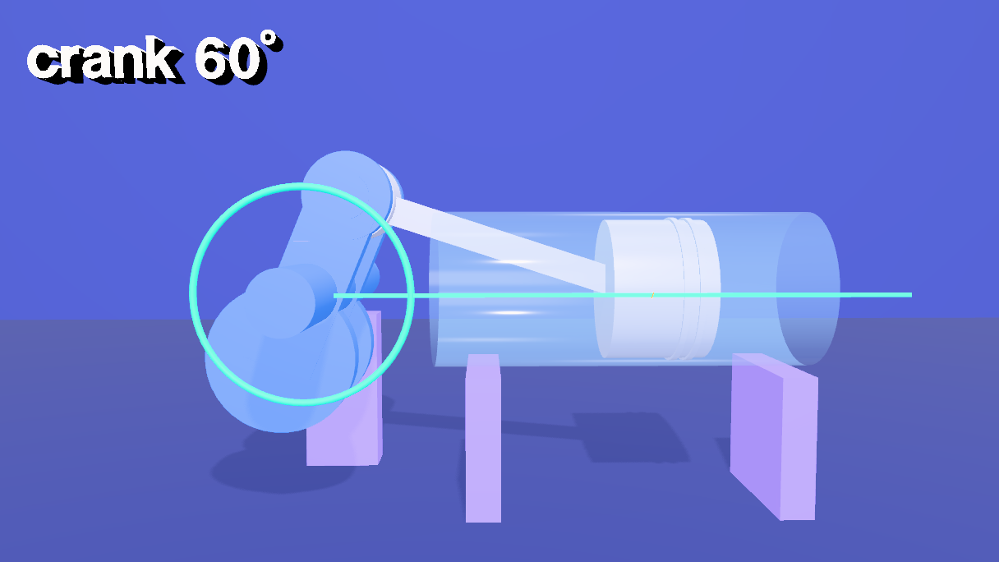
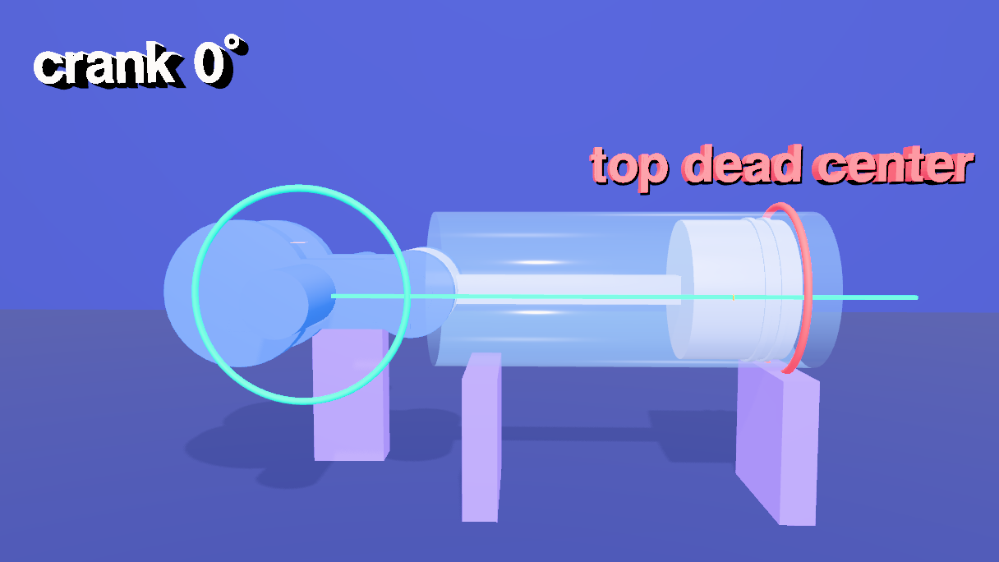
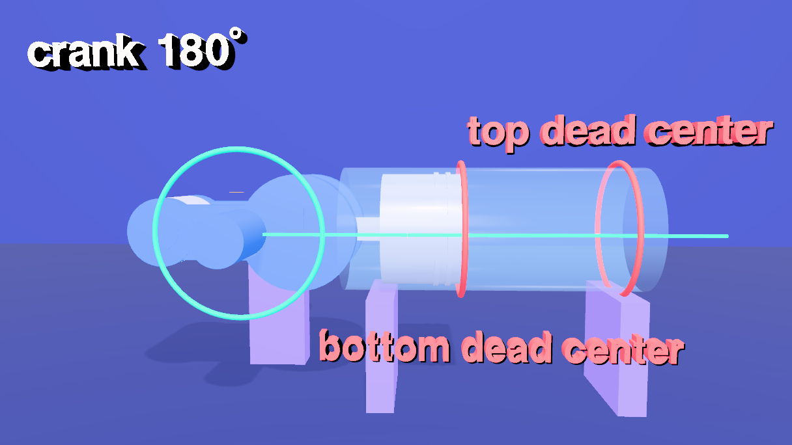
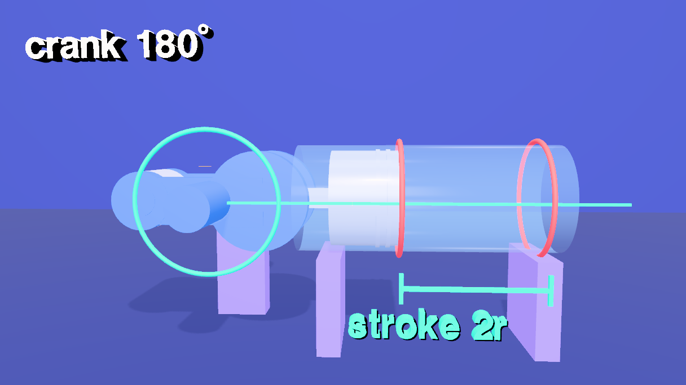
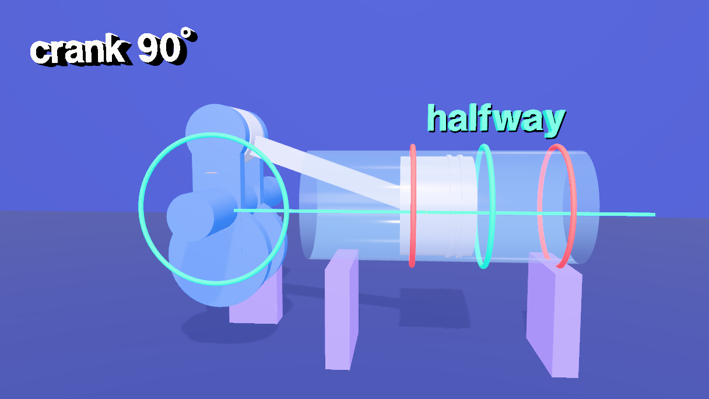
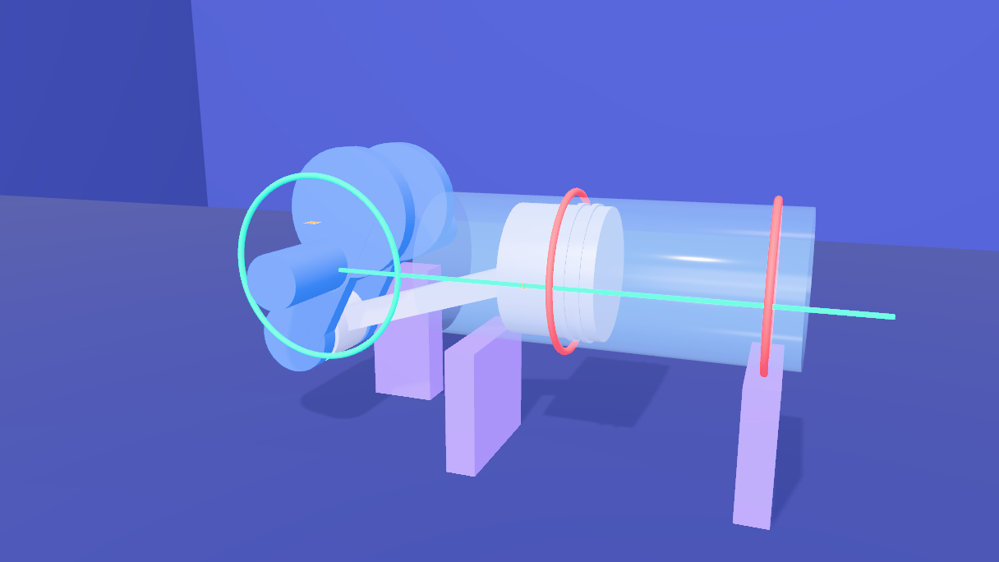
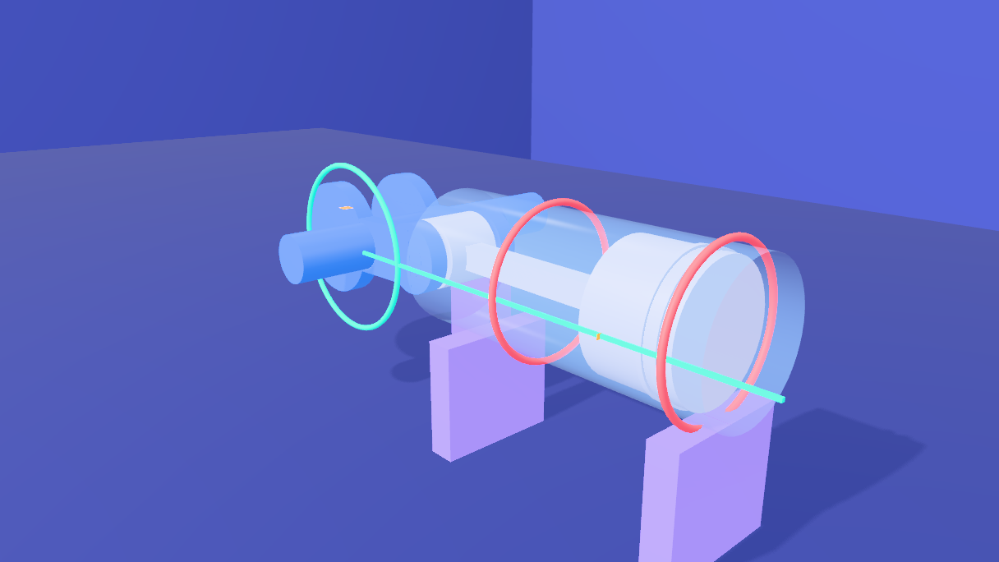
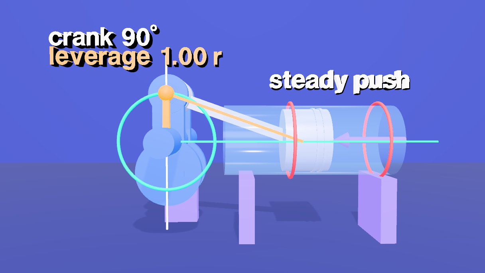
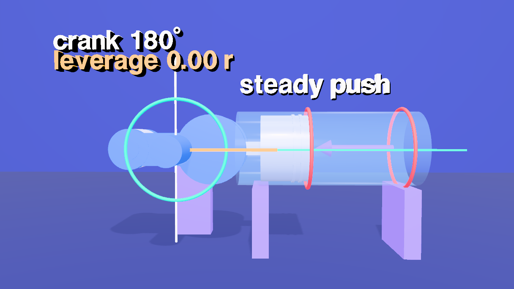
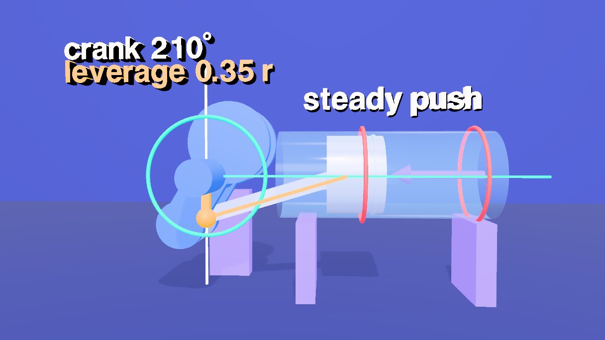
10 Subtitles
Thirteen cues, kept on the scene (scene.userData.renderSubtitles) like the other shorts. The cues were run through a speech synthesizer (Kokoro, af_sarah) and each cue gets its measured length plus 0.3 seconds, with a gap before the next, so no two ever overlap.
setSubtitles([
{ start: 0.8, end: 8.775, text: 'An engine turns a straight push into a spin, with just three\nparts: a piston, a connecting rod, and a crankshaft.' },
{ start: 9.225, end: 18.525, text: 'The piston can only slide along its cylinder. The crank can\nonly turn about its shaft. The rod ties the two together.' },
{ start: 18.975, end: 24.4, text: 'Turn the crank one full revolution, and\nthe piston goes out and back, once.' },
{ start: 24.85, end: 33.975, text: 'The crank pin travels in a circle. The piston is held to\na straight line. A rod of fixed length joins them.' },
{ start: 34.425, end: 40.725, text: 'Where the piston turns around are the dead\ncenters: top dead center, and bottom dead center.' },
{ start: 41.175, end: 47.8, text: 'The distance between them is the stroke. It\nis exactly twice the crank\'s radius.' },
{ start: 48.25, end: 56.475, text: 'Notice the piston is not simple back and forth. A\nquarter turn from the top, it is already past halfway.' },
{ start: 56.925, end: 66.275, text: 'Now orbit the assembly. The crank pin sits between two webs, the\nrod wraps the pin, and the piston turns on the other end.' },
{ start: 66.725, end: 75.625, text: 'Push the piston with a steady force. Extend the rod\'s line to\nthe shaft: the gold gap is the leverage the crank gets.' },
{ start: 76.075, end: 85.15, text: 'At a dead center, the line runs straight through the shaft, and the\nleverage is zero. Near the middle of the stroke, it is the greatest.' },
{ start: 85.6, end: 92.05, text: 'That is why an engine needs a heavy flywheel: its\nweight carries the crank through the dead centers.' },
{ start: 92.5, end: 100.275, text: 'Crank-slider kinematics: a circle, a line, and a\nrod of fixed length. Everything else follows.' },
{ start: 100.725, end: 102.925, text: 'Made with Strata.' },
]).length // 1311 Write the animation
One last block. Every animation queued above is written now, in time order.
// every animation of the film is written now, in time order
flush()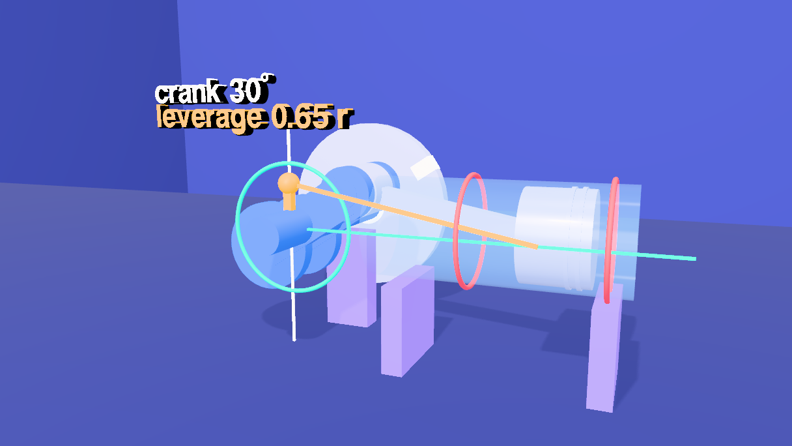
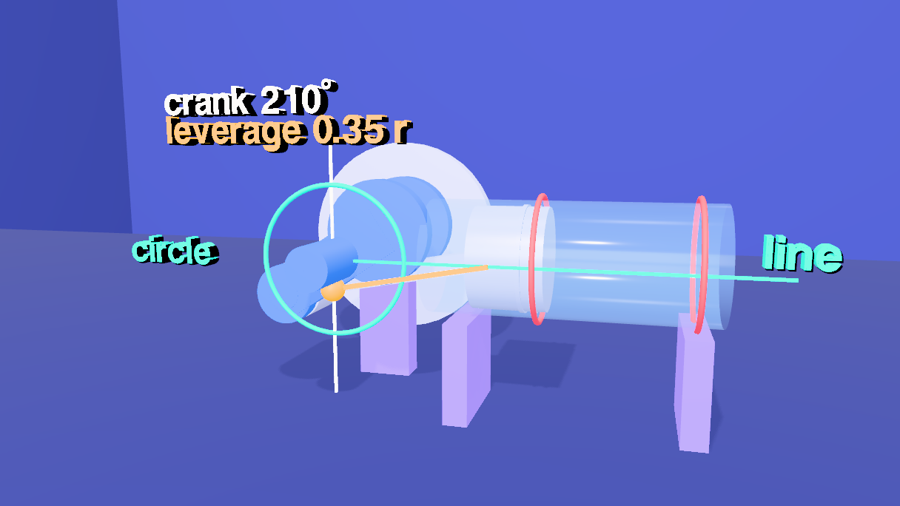
12 Render it
- Open the Render tab and its Video sub-tab. The Camera Sequence already holds the five shots from step 8.
- Choose Render (offline), 1920 × 1080 at 60 fps, and click Render. Every frame is drawn and captured at its exact timeline time, so the result is the same on a fast or a slow machine. Tick Hard-burn to draw the subtitles into the picture, and keep Also export a matching .srt.
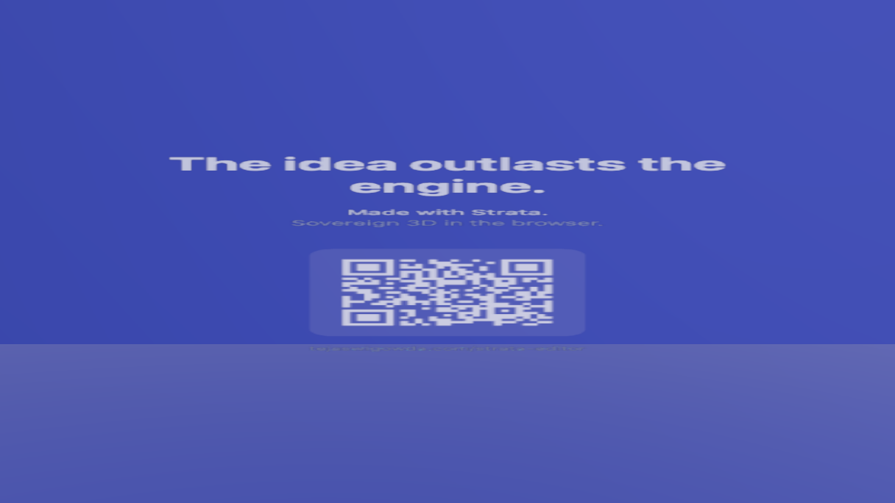
13 Open the scene file
The scene is piston.json in tejaswigowda/test1. It is the scene file, not a still: the timeline, the camera sequence and the subtitles are saved inside it, so opening it plays the film without any script, and the blocks on this page are how it was authored. Scrub the Animations tab: at 22 s the first turn, at 38 s top dead center, at 45 s the stroke, at 61 s the orbit, at 74 s the gold gap, at 90 s the flywheel, and from 100.7 s the card fills the frame.
@cf7be14), which never goes stale; the link in this step reads the branch head. When the scene is republished, move the commit in the player's address.renders/projectile in tejaswigowda/test1): 1280 × 720 at 30 fps, video only, made before the narration of step 14 existed. A 1080p60 render with the narration has to be made and published again. Addressable: every object in the scene file has a name and at least one class, and the scene is marked with requireLabels, so a commit with an unnamed, duplicated or classless object is refused; lint() in the Shell lists any.